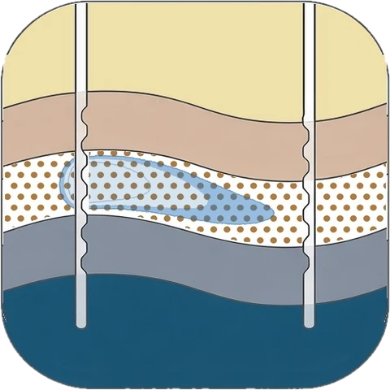
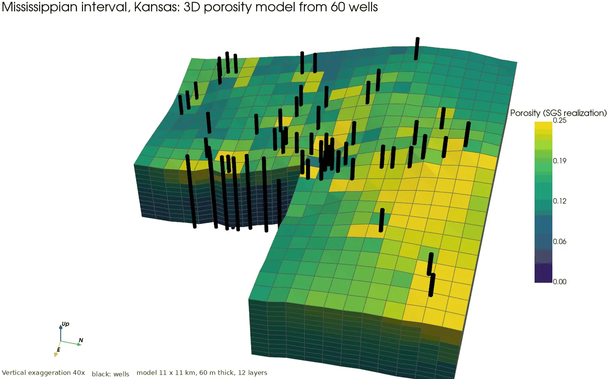
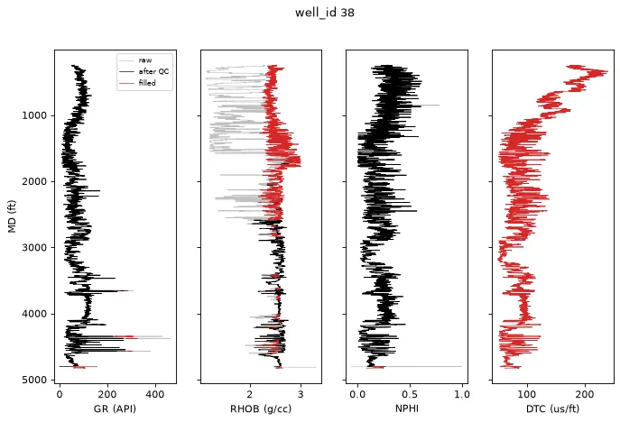
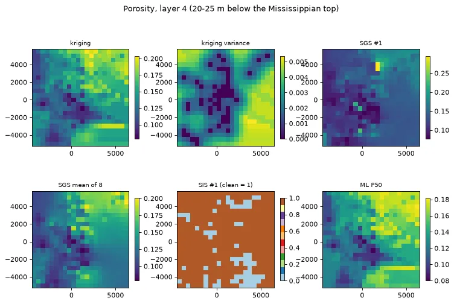
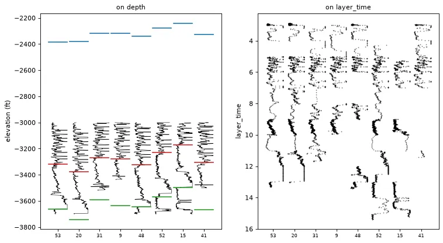
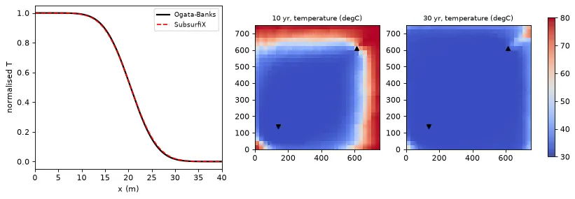

Python · Rust · Well logs and subsurface models
SubsurfiX
SubsurfiX takes you from a folder of well logs to a 3D property model you can simulate on. Log QC, gap filling, well correlation, property modeling, and flow and heat simulation in one Rust engine, run from Python or the command line, with every filled value traceable.
- Version0.1.0
- LicenseAGPL-3.0 or later

Overview
SubsurfiX takes you from a folder of well logs to a checked, correlated log set and a 3D property model you can run flow and heat simulations on. I built it because these steps usually live in separate tools, and every hand-off (cleaning logs, filling gaps, correlating wells, gridding, simulating) is where things get lost or quietly changed. Here it's one project file and one run: every filled value carries a provenance code, so you always know what was measured and what was filled. The engine is in Rust, and you drive it from Python or the command line.

Examples
One notebook per step, run on open well data.




Key features
QC and gap fill
Log QC and gap filling with a provenance code on every value.
Well correlation
Network DTW well correlation.
Grids and properties
Grids, kriging/SGS/SIS/ML property models.
Flow and heat
Flow and heat simulation, export to OpenGeoSys.
Installation
pip install subsurfixReady-built wheels are for Apple Silicon Macs. On other systems pip builds from source, which needs Rust, Python 3.10 or later, and a C/C++ compiler.
Citation
Lai, L.S.-H. (2026) SubsurfiX. Zenodo, https://doi.org/10.5281/zenodo.23832007
SubsurfiX is under the GNU Affero General Public License 3.0 or later.